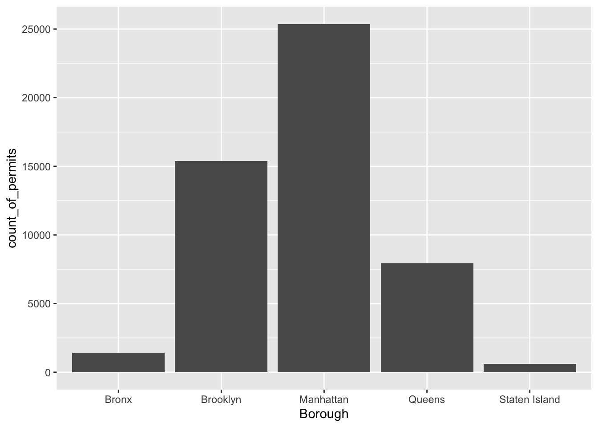
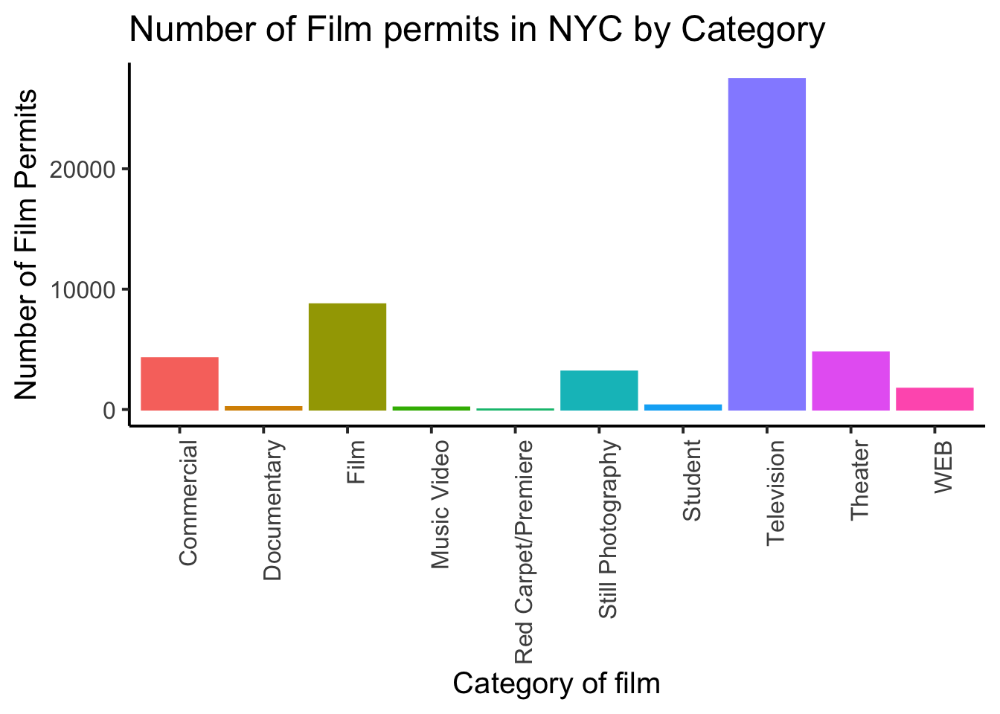
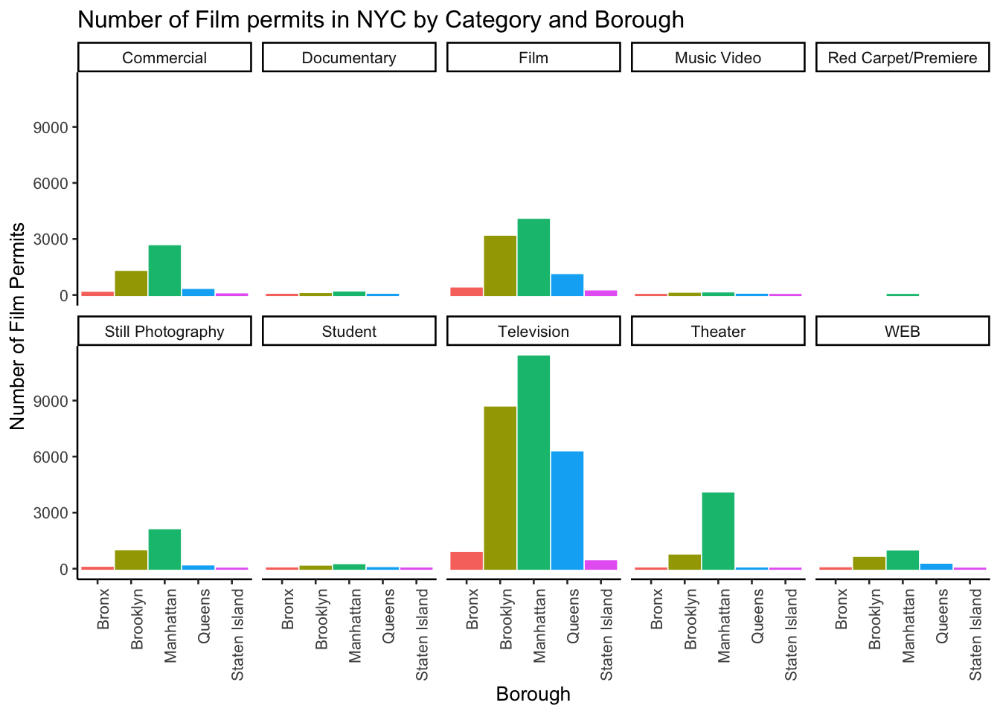
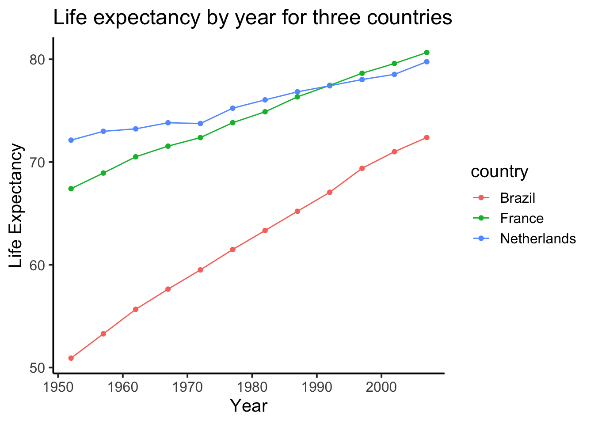

1 Week 1: Introduction
This first tutorial consists of two parts. In the first part we will work on several exercises related to the readings about research methods. In the second part you will learn how to graph data using R. This tutorial assumes you have read the required readings of [Week1] (https://thomashulst.github.io/quantrma/Introduction.html) and completed the Getting started guide. You will be completing each tutorial by writing your notes and code in an R Markdown document. You should have setup your files as described in the Getting started section. At the end of this tutorial you will upload the document with your answers to Canvas.
1.1 Part one: Research methods
1.2 Part two: Graphing data
The commonality between science and art is in trying to see profoundly - to develop strategies of seeing and showing. —Edward Tufte
As we have found out from the textbook and lecture, when we measure things, we get lots of numbers. Too many numbers. Sometimes so many your head explodes just thinking about them. One of the most helpful things you can do to begin to make sense of these numbers, is to look at them in graphical form. Unfortunately, for sight-impaired individuals, graphical summary of data is much more well-developed than other forms of summarizing data for our human senses. Some researchers are developing auditory versions of visual graphs, a process called sonification, but we aren’t prepared to demonstrate that here. Instead, we will make charts, and plots, and things to look at, rather than the numbers themselves, mainly because these are tools that are easiest to get our hands on, they are the most developed, and they work really well for visual summary. If time permits, at some point I would like to come back here and do the same things with sonification. I think that would be really, really cool!
During this part of the tutorial we’ll do these things in R:
- Load some data in R
- Talk a little bit about how the data is structured
- Make graphs of the data so we can look at it and make sense of it
1.2.1 Important info
Data for NYC film permits was obtained from the NYC open data website. The .csv file can be found here: Film_Permits.csv
Gapminder data from the gapminder project (copied from the R gapminder library) can be downloaded in .csv format here: gapminder.csv
1.2.2 Let’s get started!
To get started with the R part of this tutorial, follow these steps:
- copy the template file for lab 1, “Tutorial01_Graphing_StudentNumber.Rmd”, and place it into the “RMarkdownsTutorials” folder (i.e. copy it out of the template folder, and into the RMarkdownsTutorials folder).
- Rename the file to add your own student number, eg., “Tutorial01_Graphing_311476”
- double-click the “RMarkdownsTutorials.Rproj” file
- R Studio will now load up.
- If you click the files tab, you will see all of the files and folders inside the “RMarkdownsTutorials” folder
- Click on your Tutorial01 .rmd file and it will now load into the editor window.
When we made this course, we assumed that most students would be unfamiliar with R and R Studio, and might even be frightened of it. Don’t worry. It’s going to be way easier than you think. We know that it will seem challenging at first. But, we think that with lots of working examples, you will get the hang of it, and by the end of the course you will be able to do things you might never have dreamed you can do. It’s really a fantastic skill to learn, even if you aren’t planning on going on to do research. With that, let’s begin.
1.2.3 Generate some data
In order to graph data, we need to have some data first…Actually, with R, that’s not quite true. Run this bit of code and see what happens:

You just made R sample 100 numbers, and then plot the results in a histogram. Pretty neat. We’ll be doing some of this later in the course, where get R to make fake data for us, and then we learn to think about how data behaves under different kinds of assumptions.
For now, let’s do something that might be a little bit more interesting… let’s figure out what movies are going to be filmed in NYC. It turns out that NYC makes a lot of data about a lot things open and free for anyone to download and look at. This is the NYC Open Data website: https://opendata.cityofnewyork.us. I searched through the data, and found a data file that lists the locations of film permits for shooting movies all throughout the Burroughs. There are multiple ways to load this data into R.
If you have downloaded the RMarkdownsTutorials.zip file, then you already have the data file in the data folder. Assuming you are working in your main directory (your .rmd file is saved in the main folder that contains both the data and template folders), then use the following commands to load the data.
If the above method doesn’t work, you can try loading the data from the course website using:
If you are having issues getting the data loaded, talk to your tutor.
1.2.4 Look at the data
You will be downloading and analyzing all kinds of data files this quad. We will follow the very same steps every time. The steps are to load the data, then look at it. You want to see what you’ve got.
In R Studio, you will now see a variable called nyc_films in the top right-hand corner of the screen, in the environment tab. If you click this thing, it will show you the contents of the data in a new window. The data is stored in something we call a data frame. It’s R lingo, for the thing that contains the data. Notice it is shaped like a rectangle, with rows going across, and columns going up and down. It looks kind of like an excel spreadsheet if you are familiar with Excel.
It’s useful to know you can look at the data frame this way if you need to. But, this data frame is really big, it has 50,728 rows of data. That’s a lot too much to look at.
1.2.4.1 summarytools
The summarytools package gives a quick way to summarize all of the data in a data frame. Here’s how. When you run this code you will see the summary in the viewer on the bottom right hand side. There’s a little browser button (arrow on top of little window) that you can click to expand and see the whole thing in a browser.
On some MacOS versions, the summarytools package might require XQuartz to properly display your data summary. If you receive an error running the R code, try installing XQuartz
That is super helpful, but it’s still a lot to look at. Because there is so much data here, it’s pretty much mind-boggling to start thinking about what to do with it.
1.2.5 Make plots to answer questions
Let’s walk through a couple questions we might have about this data. We can see that there were 50,728 film permits made. We can also see that there are different columns telling us information about each of the film permits. For example, the Borough column lists the Borough for each request, whether it was made for: Manhattan, Brooklyn, Bronx, Queen’s, or Staten Island. Now we can ask our first question, and learn how to do some plotting in R.
1.2.5.1 Where are the most film permits being requested?
Do you have any guesses? Is it Manhattan, or Brooklyn, of the Bronx? Or Queen’s or Staten Island? We can find out by plotting the data using a bar plot. We just need to count how many film permits are made in each borough, and then make different bars represent the the counts.
First, we do the counting in R. Run the following code.
The above grouped the data by each of the five Borough’s, and then counted the number of times each Borough occurred (using the length function). The result is a new variable called count. I chose to name this variable count. You can see that it is now displayed in the top-right hand corned in the environment tab. If you gave count a different name, like muppets, then it would be named what you called it.
If you click on the counts variable, you will see the five boroughs listed, along with the counts for how many film permits were requested in each Borough. These are the numbers that we want to plot in a graph.
We do the plot using a fantastic package called ggplot2. It is very powerful once you get the hand of it, and when you do, you will be able to make all sorts of interesting graphs. Here’s the code to make the plot

There it is, we’re done here! We can easily look at this graph, and answer our question. Most of the film permits were requested in Manhattan, followed by Brooklyn, then Queen’s, the Bronx, and finally Staten Island.
1.2.5.2 What kind of “films” are being made, what is the category?
We think you might be skeptical of what you are doing here, copying and pasting things. Soon you’ll see just how fast you can do things by copying and pasting, and make a few little changes. Let’s quickly ask another question about what kinds of films are being made. The column Category, gives us some information about that. Let’s just copy paste the code we already made, and see what kinds of categories the films fall into. See if you can tell what I changed in the code to make this work, I’ll do it all at once:

OK, so this figure might look a bit weird because the labels on the bottom are running into each other. We’ll fix that in a bit. First, let’s notice the changes.
I changed
BoroughtoCategory. That was the main thingI left out a bunch of things from before. None of the
library()commands are used again, and I didn’t re-run the very early code to get the data. R already has those things in it’s memory, so we don’t need to do that first. If you ever clear the memory of R, then you will need to reload those things.
Fine, so how do we fix the graph? Good question. You probably have no idea how to do this, but googling your questions is a great way to learn R. It’s what everybody does.
When you Google this question, you will likely find a lot of ways to fix your graph. The trick I used is to add the last line in the R code below. I just copy-pasted it from the solution I found on stack overflow (you will become friend’s with stack overflow, there are many solutions there to all of your questions)

1.2.6 ggplot2 basics
Before we go further, I want to point out some basic properties of ggplot2, just to give you a sense of how it is working. This will make more sense in a few weeks, so come back here to remind yourself. We’ll do just a bit a basics, and then move on to making more graphs, by copying and pasting.
The ggplot function makes use of so-called layers. Layers you say? What are these layers? Well, it draws things from the bottom up. It lays down one layer of graphics, then you can keep adding on top, drawing more things. So the idea is something like: Layer 1 + Layer 2 + Layer 3, and so on. If you want Layer 3 to be Layer 2, then you just switch them in the code.
Here is a way of thinking about ggplot code
ggplot(name_of_data, aes(x = name_of_x_variable, y = name_of_y_variable)) +
geom_layer()+
geom_layer()+
geom_layer()
What I want you to focus on in the above description is the \(+\) signs. What we are doing with the plus signs is adding layers to plot. The layers get added in the order that they are written. If you look back to our previous code, you will see we add a geom_bar layer, then we added another layer to change the rotation of the words on the x-axis. This is how it works.
BUT WAIT? How am I supposed to know and remember what to add? This is nuts! We know. You’re not supposed to know just yet, how could you? We’ll give you lots of examples where you can copy and paste, and they will work. That’s how you’ll learn for now. If you really want to read the help manual you can do that too. It’s on the ggplot2 website. This will become useful after you already know what you are doing, but before that, it will probably just seem very confusing. However, it is pretty neat to look and see all of the different things you can do, it’s very powerful.
For now, let’s the get the hang of adding things to the graph that let us change some stuff we might want to change. For example, how do you add a title? Or change the labels on the axes? Or add different colors, or change the font-size, or change the background? You can change all of these things by adding different lines to the existing code.
1.2.6.1 ylab() changes y label
The last graph had count_of_permits as the label on the y-axis. That doesn’t look right. ggplot2 automatically took the label from the column, and made it be the name on the y-axis. We can change that by adding ylab("what we want"). We do this by adding a \(+\) to the last line, then adding ylab()

1.2.6.2 xlab() changes x label
Let’s slightly modify the x label too:

1.2.6.3 ggtitle() adds title
Let’s give our graph a title

1.2.6.4 color adds color
Let’s make the bars different colors. To do this, we add new code to the inside of the aes() part:

1.2.6.5 fill fills in color
Let’s make the bars different colors. To do this, we add new code to the inside of the aes() part…Notice I’ve started using new lines to make the code more readable.

1.2.6.6 get rid of the legend
Sometimes you just don’t want the legend on the side, to remove it add
theme(legend.position="none")

1.2.6.7 theme_classic() makes white background
The rest is often just visual preference. For example, the graph above has this grey grid behind the bars. For a clean classic no nonsense look, use theme_classic() to take away the grid.

1.2.6.8 Sometimes layer order matters
Interesting, theme_classic() is misbehaving a little bit and incorrectly renders the axis labels and reintroduces the legend. It looks like we have some of our layers out of order, let’s re-order. I just moved theme_classic() to just underneath the geom_bar() line. Now everything get’s drawn properly.

1.2.6.9 Font-size
Changing font-size is often something you want to do. ggplot2 can do this in different ways. I suggest using the base_size option inside theme_classic(). You set one number for the largest font size in the graph, and everything else gets scaled to fit with that that first number. It’s really convenient. Look for the inside of theme_classic()
 or make things small… just to see what happens

1.2.6.10 ggplot2 summary
That’s enough of the ggplot2 basics for now. You will discover that many things are possible with ggplot2. It is amazing. We are going to get back to answering some questions about the data with graphs. But, now that we have built the code to make the graphs, all we need to do is copy-paste, and make a few small changes, and boom, we have our graph.
1.2.7 More questions about NYC films
1.2.7.1 What are the sub-categories of films?
Notice the nyc_films data frame also has a column for SubCategoryName. Let’s see what’s going on there with a quick plot.

I guess “episodic series” are the most common. Using a graph like this gave us our answer super fast.
1.2.7.2 Categories by different Boroughs
Let’s see one more really useful thing about ggplot2. It’s called facet_wrap(). It’s an ugly word, but you will see that it is very cool, and you can do next-level-super-hero graph styles with facet_wrap that other people can’t do very easily.
Here’s our question. We know that some films are made in different Boroughs, and that same films are made in different categories, but do different Boroughs have different patterns for the kinds of categories of films they request permits for? Are their more TV shows in Brooklyn? How do we find out? Watch, just like this:

We did two important things. First we added Borough and Category into the group_by() function. This automatically gives separate counts for each category of film, for each Borough. Then we added facet_wrap(~Borough, ncol=3) to the end of the plot, and it automatically drew us 5 different bar graphs, one for each Borough! That was fast. Imagine doing that by hand.
The nice thing about this is we can switch things around if we want. For example, we could do it this way by switching the Category with Borough, and facet-wrapping by Category instead of Borough like we did above. Do what works for you.

1.2.8 Gapminder Data
https://www.gapminder.org is an organization that collects some really interesting worldwide data. They also make cool visualization tools for looking at the data. There are many neat examples, and they have visualization tools built right into their website that you can play around with https://www.gapminder.org/tools/. That’s fun check it out.
There is also an R package called gapminder. When you install this package, it loads in some of the data from gapminder, so we can play with it in R.
If you don’t have the gapminder package installed, you can install it by running this code
Once the package is installed, you need to load the new library, like this. Then, you can put the gapminder data into a data frame, like we do here: gapminder_df.
1.2.8.1 Look at the data frame
You can look at the data frame to see what is in it, and you can use summarytools again to view a summary of the data.
There are 1704 rows of data, and we see some columns for country, continent, year, life expectancy, population, and GDP per capita.
1.2.9 Asking Questions with the gap minder data
We will show you how to graph some the data to answer a few different kinds of questions. Then you will form your own questions, and see if you can answer them with ggplot2 yourself. All you will need to do is copy and paste the following examples, and change them up a little bit
1.2.9.1 Life Expectancy histogram
How long are people living all around the world according to this data set? There are many ways we could plot the data to find out. The first way is a histogram. We have many numbers for life expectancy in the column lifeExp. This is a big sample, full of numbers for 142 countries across many years. It’s easy to make a histogram in ggplot to view the distribution:

See, that was easy. Next, is a code block that adds more layers and settings if you wanted to modify parts of the graph:

The histogram shows a wide range of life expectancies, from below 40 to just over 80. Histograms are useful, they can show you what kinds of values happen more often than others.
One final thing about histograms in ggplot. You may want to change the bin size. That controls how wide or narrow, or the number of bars (how they split across the range), in the histogram. You need to set the bins= option in geom_histogram().

See, same basic patter, but now breaking up the range into 50 little equal sized bins, rather than 30, which is the default. You get to choose what you want to do.
1.2.9.2 Life Expectancy by year Scatterplot
We can see we have data for life expectancy and different years. So, does worldwide life expectancy change across the years in the data set? As we go into the future, are people living longer?
Let’s look at this using a scatter plot. We can set the x-axis to be year, and the y-axis to be life expectancy. Then we can use geom_point() to display a whole bunch of dots, and then look at them. Here’s the simple code:

Whoa, that’s a lot of dots! Remember that each country is measured each year. So, the bands of dots you see, show the life expectancies for the whole range of countries within each year of the database. There is a big spread inside each year. But, on the whole it looks like groups of dots slowly go up over years.
1.2.9.3 One country, life expectancy by year
I’m (Matt) from Canada, so maybe I want to know if life expectancy for Canadians is going up over the years. To find out the answer for one country, we first need to split the full data set, into another smaller data set that only contains data for Canada. In other words, we want only the rows where the word “Canada” is found in the country column. We will use the filter function from dplyr for this:

I would say things are looking good for Canadians, their life expectancy is going up over the years!
1.2.9.4 Multiple countries scatterplot
What if we want to look at a few countries altogether. We can do this too. We just change how we filter the data so more than one country is allowed, then we plot the data. We will also add some nicer color options and make the plot look pretty. First, the simple code:

Nice, we can now see three sets of dots, but which are countries do they represent? Let’s add a legend, and make the graph better looking.

1.2.9.5 geom_line() connecting the dots
We might also want to connect the dots with a line, to make it easier to see the connection! Remember, ggplot2 draws layers on top of layers. So, we add in a new geom_line() layer.

1.2.10 Generalization Exercise
The following generalization exercise and writing assignment is also in your lab R Markdown document for this lab. Complete your work in that document and hand it in.
(1 point - Pass/Fail)
Use the code from above to attempt to solve the extra things we ask you do for this assignment. You generalization exercises are as follows:
Make a graph plotting Life Expectancy by year for the five continents, using the
continentfactor. Make sure you change the title so it reads correctlyMake a graph plotting GDP per capita by year for the USA, Canada, and Mexico. Use the
gdpPercapcolumn for the GDP per capita dataMake a new graph plotting anything you are interested in using the gapminder dataset. It just needs to be a plot that we have not given an example for
1.2.11 Writing assignment
Complete the writing assignment described in your R Markdown document for this lab. When you have finished everything. Knit the document and hand in your stuff (you can submit your .RMD file to blackboard if it does not knit.)
The question for this lab is a long answer question about histograms. Here is the question:
Describe what histograms are, how to interpret them, and what they are useful for. You should answer each of these questions:
The answers to each of these questions are worth .25 points each, for a total of 2 points
- What do the bars on a histogram represent?
- How many bars can a histogram have?
- What do the heights of the bars tell you
- What is on the x-axis and y-axis of a histogram
- What does the tallest bar on a histogram tell you?
- What does the shortest bar on a histogram tell you?
- What are some uses for histograms, why would you want to look at a histogram of some numbers that you collected?
- Imagine you had two histograms, one was very wide and spread out, the other was very narrow with a very tall peak. Which histogram would you expect to contain more consistent numbers (numbers that are close to each other), explain why.
Rubric
General grading.
- You will receive 0 points for missing answers (say, if you do not answer question c, then you will receive 0 out .25 points for that question)
- You must write in complete sentences. Point form sentences will be given 0 points.
- Completely incorrect answers will receive 0 points. For example, if you incorrectly describe what the x and y-axes refer to, then you will receive 0 points for that question.
- If your answer is generally correct but very difficult to understand and unclear you may receive half points for the question